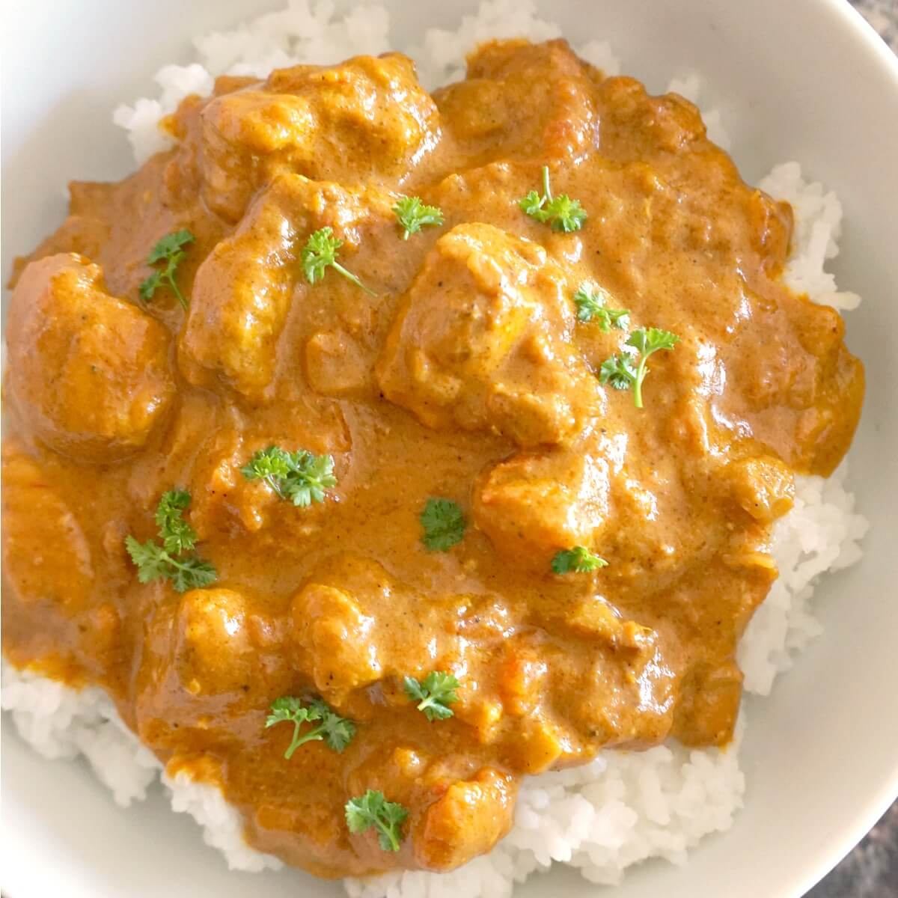

Indian Curry Recipe

Description
If you love Indian food you have to try this recipe! This Chicken Curry tastes just as good as what you'd get at an Indian restaurant, if not better, and it's easy to make.
It brimming with flavor thanks to all the spices, it's rich and creamy and it's amazingly hearty when you finish it off with basmati rice or naan bread.
Ingredients:
- Coriander, cumin, turmeric, fennel seeds, cinnamon, pepper, ground mustard, ground cloves, cayenne pepper and salt: these spices build incredible flavor in this dish. Together they create a homemade curry blend.
- Olive oil: used for sautéing.
- Fresh onion, garlic and ginger: these aromatics add a key depth of flavor.
- Low-sodium chicken broth: to create a sauce base to coat the chicken.
- Canned tomatoes: fresh tomatoes will work here too but canned are quicker and easier.
- Chicken breasts: be careful not to over-cook so the chicken doesn't become dry.
- Cornstarch: used to thicken the sauce slightly.
- Heavy cream: this makes the sauce deliciously rich and creamy.
- Chopped cilantro: adds a nice prop of fresh flavor and color.
Steps:
- Mix spices together
- Saute onion, garlic and ginger in a skillet.
- Add broth and tomatoes, simmer
- Blend Mixture in a blender as directed then return to skiller
- Season sauce then add chicken
- Simmer chicken in sauce until cooked through
- Add cornstarch slurry during last minute to thicken sauce.
- Stir in cream.
- Serve over rice garnished with cilantro.